컴퓨터응용선반기능사 (2016-07-10 기출문제)
1과목: 기계재료 및 요소
1. 6-4 황동에 Fe를 1~2%를 첨가함으로써 강도와 내식성이 향상되어 광산기계, 선박용 기계, 화학기계 등에 사용되는 특수 황동은?
- 쾌삭 메탈
- 델타 메탈
- 네이벌 황동
- 애드미럴티 황동
(정답률: 69%)

2. 냉간 가공된 황동제품들이 공기 중의 암모니아 및 염류로 인하여 입간부식에 의한 균열이 생기는 것은?
- 저장균열
- 냉간균열
- 자연균열
- 열간균열
(정답률: 70%)
3. 탄소강에 함유되는 원소 중 강도, 연신율, 충격치를 감소시키며 적열취성의 원인이 되는 것은?
- Mn
- Si
- P
- S
(정답률: 59%)
4. 절삭 공구로 사용되는 재료가 아닌 것은?
- 페놀
- 서멧
- 세라믹
- 초경합금
(정답률: 61%)
5. 탄소강에 함유된 원소 중 백점이나 헤어크랙의 원인이 되는 원소는?
- 황
- 인
- 수소
- 구리
(정답률: 70%)
6. 철강의 열처리 목적으로 틀린 것은?
- 내부의 응력과 변형을 증가시킨다.
- 강도, 연성, 내마모성 등을 향상시킨다.
- 표면을 경화시키는 등의 성질을 변화시킨다.
- 조직을 미세화하고 기계적 특성을 향상시킨다.
(정답률: 59%)
7. 상온이나 고온에서 단조성이 좋아지므로 고온가공이 용이하며 강도를 요하는 부분에 사용하는 황동은?
- 톰백
- 6-4황동
- 7-3황동
- 함석황동
(정답률: 57%)
8. 미끄럼 베어링의 윤활 방법이 아닌 것은?
- 적하 급유법
- 패드 급유법
- 오일링 급유법
- 충격 급유법
(정답률: 71%)
9. 일반 스퍼기어와 비교한 헬리컬 기어의 특징에 대한 설명으로 틀린 것은?
- 임의의 비틀림 각을 선택할 수 있어서 축중심거리의 조절이 용이하다.
- 물림 길이가 길고 물림률이 크다.
- 최소 잇수가 적어서 회전비를 크게 할 수가 있다.
- 추력이 발생하지 않아서 진동과 소음이 적다.
(정답률: 62%)
10. 8kn의 인장하중을 받는 정사각봉의 단면에 발생하는 인장응력이 5MPa이다. 이 정사각봉의 한 변의 길이는 약 몇 ㎜인가?
- 40
- 60
- 80
- 100
(정답률: 75%)
11. 기계의 운동에너지를 흡수하여 운동속도를 감속 또는 정지시키는 장치는?
- 기어
- 커플링
- 마찰차
- 브레이크
(정답률: 82%)
12. 핀(Pin)의 종류에 대한 설명으로 틀린 것은?
- 테이퍼 핀은 보통 1/50 정도의 테이퍼를 가지며, 축에 보스를 고정시킬 때 사용할 수 있다.
- 평행핀은 분해·조립하는 부품의 맞춤면의 관계 위치를 일정하게 할 필요가 있을 때 주로 사용된다.
- 분할핀은 한쪽 끝이 2가닥으로 갈라진 핀으로 축에 끼워진 부품이 빠지는 것을 막는데 사용할 수 있다.
- 스프링 핀은 2개의 봉을 연결하기 위해 구멍에 수직으로 핀을 끼워 2개의 봉이 상대 각운동을 할 수 있도록 연결한 것이다.
(정답률: 53%)
13. 체인 전동의 일반적인 특징으로 거리가 먼 것은?
- 속도비 일정하다.
- 유지 및 보수가 용이하다.
- 내열, 내유, 내습성이 강하다.
- 진동과 소음이 없다.
(정답률: 74%)
14. 회전체의 균형을 좋게 하거나 너트를 외부에 유출시키지 않으려고 할 때 주로 사용하는 너트는?
- 캡 너트
- 둥근 너트
- 육각 너트
- 와셔붙이 너트
(정답률: 54%)
15. 한쪽은 오른나사, 다른 한쪽은 왼나사로 되어 양끝을 서로 당기거나 밀거나 할 때 사용하는 기계요소는?
- 아이 볼트
- 세트 스크류
- 플레이트 너트
- 턴 버클
(정답률: 48%)
2과목: 기계제도(절삭부분)
16. 가공에 의한 줄무늬 방향의 기호 중 대략 동심원 모양을 나타내는 것은?
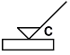
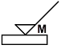
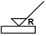
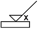
(정답률: 68%)
17. 단면유의 표기 방법에서 그림과 같이 도시하는 단면도의 종류 명칭은?
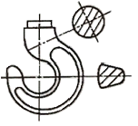
- 전단면도
- 한쪽 단면도
- 부분 단면도
- 회전 도시 단면도
(정답률: 66%)
18. 헐거운 끼워맞춤에서 구멍의 최대 허용치수와 최소 허용치수와의 차를 의미하는 용어는?
- 최소 틈새
- 최대 틈새
- 최소 죔새
- 최대 죔새
(정답률: 67%)
19. 다음과 같이 지시된 기하공차 기임 틀의 해독으로 옳은 것은?
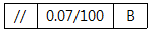
- 평행도가 데이텀 B를 기준으로 지정길이 100㎜에 대하여 0.07㎜의 허용 값을 가지는 것
- 평행도가 데이텀 B를 기준으로 지정길이 0.07㎜에 대하여 100㎜ 허용 값을 가지는 것
- 평행도가 데이텀 B를 기준으로 0.0007㎜의 허용 값을 가지는 것
- 평행도가 데이텀 B를 기준으로 0.07~100㎜의 허용 값을 가지는 것
(정답률: 63%)
20. 가는 1점 쇄선의 용도로 적합하지 않은 것은?
- 도형의 중심을 표시하는데 사용
- 중심이 이동한 중심궤적을 표시하는데 사용
- 위치 결정의 근거가 된다는 것을 명시할 때 사용
- 단면의 무게 중심을 연결한 선을 표시하는데 사용
(정답률: 42%)
21. 다음 치수 기입 방법 중 호의 길이로 옳은 것은?
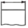
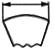
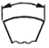
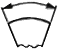
(정답률: 60%)
22. 도면과 같이 위치도를 규제하기 위하여 B 치수에 정확한 치수를 기입한 것은?
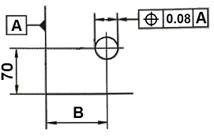
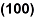
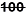
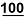
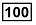
(정답률: 66%)
23. 그림과 같은 입체도를 화살표 방향에서 본 투상도로 가장 옳은 것은? (단, 해당 입체는 화살표 방향으로 볼 때 좌우 대칭 구조이다.)
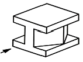
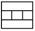
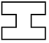
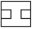
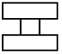
(정답률: 75%)
24. 축의 도시 방법에 관한 설명으로 옳은 것은?
- 축은 길이방향으로 온단면 도시한다.
- 길이가 긴 축은 중간을 파단하여 짧게 그릴 수 있다.
- 축의 끝에는 모따기를 하지 않는다.
- 축의 키 홈을 나타낼 경우 국부 투상도로 나타내어서는 안 된다.
(정답률: 50%)
25. 도면에 표시된 3/8-16UNC-2A의 해석으로 옳은 것은?
- 피치는 3/8 인치이다.
- 산의 수는 1인치당 16개이다.
- 유니파이 가는 나사이다.
- 나사부의 길이는 2인치이다.
(정답률: 40%)
26. 구동 방법에 의한 3차원 측정기의 분류가 아닌 것은?
- 래핑형
- 수동형
- 자동형
- 조이스틱형
(정답률: 48%)
27. 바깥지름 연삭기의 이송방법에 해당하지 않는 것은?
- 플런지 컷형
- 테이블 왕복형
- 연삭 숫돌대 왕복형
- 공작물 고정 유성형 연삭
(정답률: 42%)
28. 선반 주축대에 대한 설명으로 틀린 것은?
- 주축과 변속장치를 내장하고 있다.
- 주축 내부는 모스 테이퍼로 되어 있다.
- 절삭저항이나 진동에 견딜 수 있는 특수강을 사용한다.
- 주축은 강도와 경도를 높이기 위하여 중실축으로 만든다.
(정답률: 46%)
29. 줄작업 시 줄눈의 거친 순서에 따라 작업하는 순서로 옳은 것은?
- 세목→황목→중목
- 중목→세목→황목
- 황목→세목→중목
- 황목→중목→세목
(정답률: 62%)
30. 다음 바이트의 각도를 나타낸 그림에서 C는?
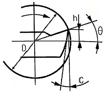
- 경사각
- 날끝각
- 여유각
- 중립각
(정답률: 62%)
3과목: 기계공작법
31. 숫돌의 표시방법 순서로 옳은 것은?
- 숫돌입자의 종류→입도→결합제→조직→결합도
- 숫돌입자의 종류→입도→결합도→조직→결합제
- 숫돌입자의 종류→조직→결합도→입도→결합제
- 숫돌입자의 종류→입도→조직→결합도→결합제
(정답률: 56%)
32. 절삭 공구의 구비조건에 대한 설명으로 틀린 것은?
- 성형성이 좋고 가격이 저렴할 것
- 내마모성이 작고 마찰계수가 높을 것
- 높은 온도에서 경도가 떨어지지 않을 것
- 공작물보다 단단하고 적당한 인성이 있을 것
(정답률: 61%)
33. 드릴링 머신에서 할 수 없는 작업은?
- 리밍
- 태핑
- 카운터 싱킹
- 슈퍼 피니싱
(정답률: 54%)
34. 밀링머신의 규격을 나타내는 방법으로 옳은 것은?
- 밀링 본체의 크기
- 전동 마력의 크기
- 테이블의 이송거리
- 스핀들의 RPM 크기
(정답률: 57%)
35. 선반에서 테이퍼 절삭 방법이 아닌 것은?
- 리드 스크류에 의한 방법
- 복식 공구대에 의한 방법
- 심압대 편위에 의한 방법
- 테이퍼 절삭장치에 의한 방법
(정답률: 45%)
36. 윤활제의 구비조건으로 틀린 것은?
- 열에 대해 안정성이 높아야 한다.
- 산화에 대한 안정성이 높아야 한다.
- 온도변화에 따른 점도변화가 커야 한다.
- 화학적으로 불활성이며 깨끗하고 균질해야 한다.
(정답률: 70%)
37. 가공 방법에 따른 공구와 공작물의 상호 운동 관계에서 공구와 공작물이 모두 직선 운동을 하는 공작 기계로 바르게 짝지어진 것은?
- 셰이퍼, 연삭기
- 밀링머신, 선반
- 셰이퍼, 플레이너
- 호닝머신, 래핑머신
(정답률: 49%)
38. 측정자의 직선운동을 지침의 회전 운동으로 변화시켜 눈금으로 읽을 수 있는 길이 측정기는?
- 드릴 게이지
- 마이크로미터
- 다이얼 게이지
- 와이어 게이지
(정답률: 58%)
39. 블록게이지, 한계게이지 등의 게이지류, 렌즈, 유리 기구 등을 다듬질하는 가공법은?
- 래핑
- 호닝
- 액체호닝
- 평면 그라인딩
(정답률: 42%)
40. 다음 설명에 해당하는 칩(chip)은?
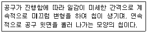
- 균열형 칩(crack type chip)
- 유동형 칩(flow type chip)
- 열단형 칩(tear type chip)
- 전단형 칩(shear type chip)
(정답률: 65%)
4과목: CNC공작법 및 안전관리
41. 직접 분할법으로 6등분을 할 때, 직접 분할판의 크랭크 회전수는?
- 1회전
- 2회전
- 3회전
- 4회전
(정답률: 40%)
42. 수평 밀링머신에서 밀링커터를 고정하는 곳은?
- 아버
- 컬럼
- 바이스
- 테이블
(정답률: 43%)
43. 다음 그림에서 자동코너 R가공을 할 때 A점에서 C점까지의 가공 프로그램으로 옳은 것은?
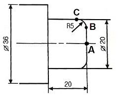
- G01 X10. R5. F0.1 ;
- G01 X20. R5. F0.1 ;
- G01 X10. R-5. F0.1 ;
- G01 X20. R-5. F0.1 ;
(정답률: 32%)
44. 머시닝센터 프로그램에서 G코드의 기능이 틀린 것은?
- G90 - 절대 명령
- G91 - 증분 명령
- G99 - 회전당 이송
- G98 - 고정 사이클 초기점 복귀
(정답률: 47%)
45. CNC선반에서 900rpm으로 회전하는 스핀들에 3회전 동안 이송정지를 하고자 한다. 올바른 지령으로만 짝지어진 것은?
- G04 X0.2; G04 U0.2; G04 P200;
- G04 X1.5; G04 U1.5; G04 P1500;
- G04 X2.0; G04 U2.0; G04 P2000;
- G04 X2.7; G04 U2.7; G04 P2700;
(정답률: 27%)
46. 안전한 작업자의 행동으로 볼 수 없는 것은?
- 기계 위에 공구나 재료를 올려놓지 않는다.
- 기계의 회전을 손이나 공구로 멈추지 않는다.
- 절삭공구는 길게 장착하여 절삭 시 접촉면을 크게 한다.
- 칩을 제거할 때는 장갑을 끼고 브러시나 칩클리너를 사용한다.
(정답률: 66%)
47. 공작기계의 핸들 대신에 구동모터를 장치하여 임의의 위치에 필요한 속도로 테이블을 이동시켜 주는 기구의 명칭은?
- 검출기구
- 서보기구
- 펀칭기구
- 인터페이스 회로
(정답률: 60%)
48. CNC선반 가공 프로그램에서 반드시 전개 번호를 사용해야 하는 G-코드는?
- G30
- G32
- G70
- G90
(정답률: 41%)
49. 도면을 보고 프로그램을 작성할 때 절대 좌표계의 기준이 되는 점으로서 프로그램 원점 또는 공작물 원점이라고도 하는 좌표계는?
- 기계 좌표계
- 상대 좌표계
- 공작물 좌표계
- 공구보정 좌표계
(정답률: 56%)
50. CNC선반에서 날끝 반지름 보정을 하지 않으면 가공치수에 영향을 주는 가공은?
- 나사 가공
- 단면 가공
- 드릴 가공
- 테이퍼 가공
(정답률: 38%)
51. 여러 대의 CNC 공작기계를 한 대의 컴퓨터에 연결해 데이터를 분배하여 전송함으로써 동시에 운전할 수 있는 방식은?
- NC
- CAD
- CNC
- DNC
(정답률: 58%)
52. CNC장비에서 공구장착 및 교환 시 안전을 위하여 필수적으로 점검할 사항이 아닌 것은?
- 공구 길이보정 상태를 확인하고 보정 값을 삭제한다.
- 윤활유 및 공기의 압력이 규정에 적합한지 확인한다.
- 툴홀더의 공구 고정 볼트가 견고히 고정되어 있는지 확인한다.
- 기계의 회전부위나 작동부위에 신체접촉이 생기지 않도록 한다.
(정답률: 56%)
53. CNC선반에서 G92를 이용하여 나사가공 할 때 그림에서 나사를 절삭하는 부분에 해당하는 것은?
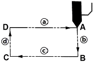
- ⓐ
- ⓑ
- ⓒ
- ⓓ
(정답률: 50%)
54. CNC선반에서 현재의 위치에서 다른 점을 경유하지 않고 X축만 기계원점으로 복귀하는 것은?
- G28 X0;
- G28 U0;
- G28 W0;
- G28 U100.0;
(정답률: 41%)
55. 다음 CNC선반 프로그램에서 N50 블록에 해당되는 주축 회전수는 약 몇 rpm인가?
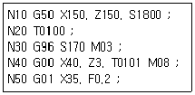
- 1546
- 1719
- 1800
- 1865
(정답률: 31%)
56. CNC선반 가공에서 기준 공구 인선의 좌표와 해당 공구 인선의 좌표 차이를 무엇이라 하는가?
- 공구 간섭
- 공구 보정
- 공구 벡터
- 공구 운동
(정답률: 48%)
57. 머시닝센터 이송에 관련된 준비기능의 설명으로 옳은 것은?
- G95는 1분당 이송량이다.
- G94는 1회전당 이송량이다.
- G95의 값을 변화시키면 가공시간이 변한다.
- G94의 값을 변화시키면 주축회전수가 변한다.
(정답률: 38%)
58. 보조기능(M-기능)에 대한 설명으로 틀린 것은?
- M00 : 프로그램 정지
- M03 : 주축 정회전
- M08 : 절삭유 ON
- M99 : 보조프로그램 호출
(정답률: 55%)
59. 드릴작업에 있어 안전사항에 관한 설명으로 틀린 것은?
- 장갑을 끼고 작업하지 않는다.
- 드릴을 회전시킨 후에는 테이블을 조정하지 않도록 한다.
- 얇은 판에 구멍을 뚫을 때에는 나무판을 밑에 받치고 구멍을 뚫도록 해야 한다.
- 가공 중 드릴 끝이 마모되어 이상한 소리가 나면 공구의 이송속도를 더욱 빠르게 한다.
(정답률: 71%)
60. 머시닝센터에서 여러 개의 공작물을 한 번에 가공할 때 사용하는 좌표계 설정 준비기능 코드가 아닌 것은?
- G54
- G56
- G59
- G92
(정답률: 45%)